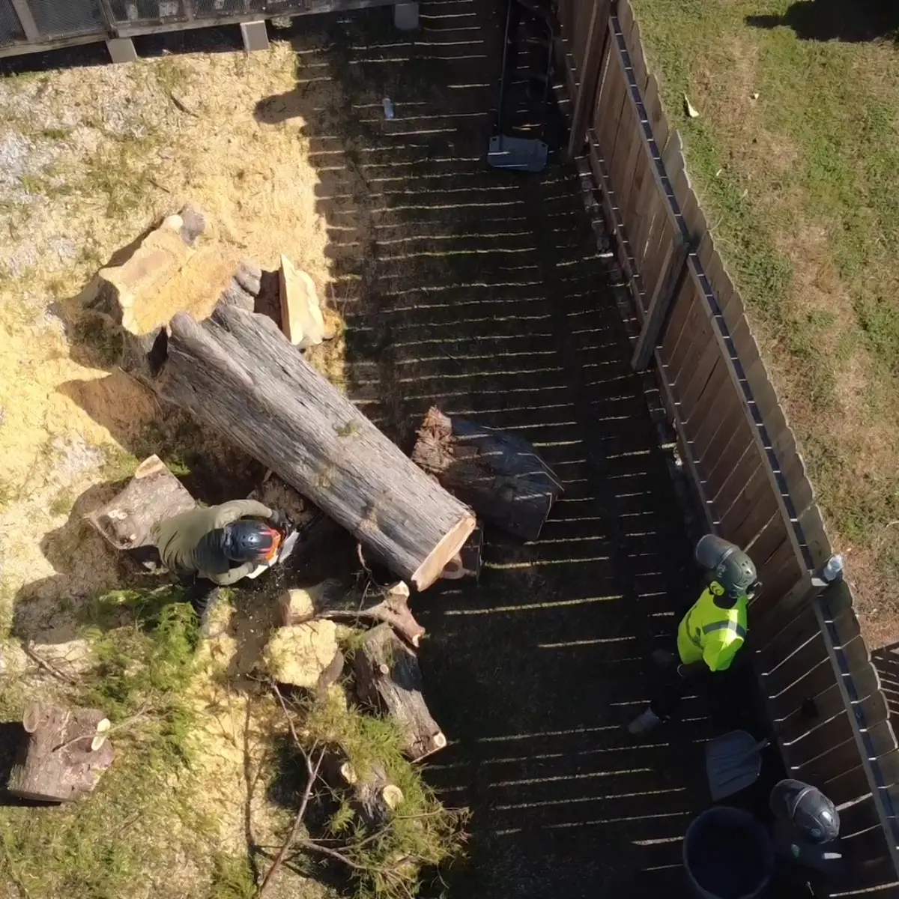
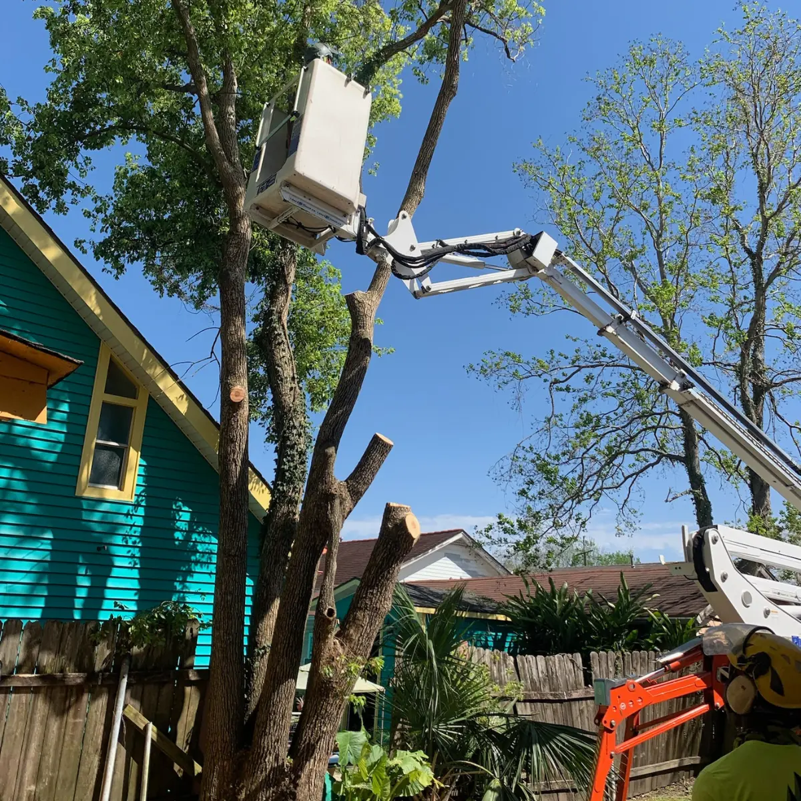

Innovative Techniques for Preserving Trees and Their Ecosystems
Contact us today for a consultation on our Tree Preservation Services in NOLA!
Urgent or unsafe? Call (504) 732-0779


Trees are not just a source of beauty in our natural environment; they are also essential for the survival of countless species, including humans. Trees provide us with oxygen, shade, and food, while also acting as carbon sinks to mitigate climate change.
As such, it is crucial to preserve and protect our trees and their ecosystems. However, tree preservation is not always an easy task, especially in urban environments where development and human activity can cause damage.
This is where A Perfect Cut Tree come in, which aims to protect trees and their surrounding ecosystems while also accommodating human needs. We will explore some of these techniques and their benefits, highlighting their importance in promoting sustainable development and environmental stewardship.

Proper Tree Pruning and Maintenance Techniques
Proper tree pruning and maintenance techniques are essential for maintaining healthy and attractive trees. Here are some tips for pruning and maintaining trees:
Prune at the Right Time
Pruning at the right time can help minimize stress on the tree and promote proper healing. In general, it is best to prune trees during the dormant season, although there are exceptions for certain species.
Use Proper Pruning Techniques
Proper pruning techniques can help prevent damage to the tree and promote healthy growth. Make clean, angled cuts with sharp pruning tools, and avoid leaving stubs or tearing the bark.
Remove Dead or Diseased Branches
Dead or diseased branches can pose a safety hazard and may also be a sign of a larger problem with the tree. Removing these branches can help prevent further damage to the tree and reduce the risk of falling limbs.
Avoid Topping Trees
Topping, or removing the tops of trees, can cause extensive damage to the tree and should be avoided. Instead, use proper pruning techniques to selectively remove branches.
Promote Proper Tree Growth
Proper tree maintenance techniques such as fertilizing, watering, and pest management can help promote healthy tree growth and reduce the need for pruning.
Work With a Qualified Tree Care Professional
When pruning or maintaining trees, it is important to work with a qualified tree care professional who understands proper pruning techniques and can help ensure that the work is done safely and responsibly.

Soil Preparation and Fertilization for Tree Health
Healthy soil is essential for the growth and development of trees. Proper soil preparation and fertilization can help ensure that trees have the nutrients they need to thrive.
Here are some tips for soil preparation and fertilization for tree health:
- Test Your Soil: Before fertilizing your trees, it is important to test your soil to determine its nutrient content and pH level. This information can help you determine which fertilizers and amendments are needed.
- Amend Your Soil as Needed: If your soil is deficient in certain nutrients, you may need to amend it with fertilizers or other soil amendments. Be sure to follow the manufacturer’s instructions and apply the amendments at the right time of year.
- Use Slow-Release Fertilizers: Slow-release fertilizers can provide a steady supply of nutrients to trees over an extended period of time, which can help promote healthy growth and reduce the risk of nutrient runoff.
- Apply Fertilizers Properly: When applying fertilizers, be sure to follow the manufacturer’s instructions and apply them evenly around the tree’s drip line. Avoid over-fertilizing, which can damage the tree’s roots and contribute to nutrient runoff.
- Mulch Around the Tree: Mulching around the base of the tree can help retain moisture in the soil and suppress weeds, which can compete with the tree for nutrients. Be sure to leave a small space between the mulch and the tree trunk to prevent moisture buildup and potential damage to the trunk.
- Water Properly: Proper watering is also essential for tree health. Be sure to water trees deeply and infrequently, rather than frequent shallow watering, which can promote shallow root growth.

Strategies for Preserving Mature Trees in Urban Areas
Mature trees in urban areas provide a variety of benefits, such as shade, cleaner air, and aesthetic value. However, these trees can face a variety of challenges, including soil compaction, limited space, and damage from human activity.
Here are some strategies for preserving mature trees in urban areas:
Provide Adequate Space
Mature trees need adequate space to grow and thrive. It is important to provide enough space for the tree’s canopy and root system to avoid soil compaction, which can limit root growth and nutrient uptake.
Protect the Trunk and Roots
Damage to the trunk and roots can be detrimental to the health of mature trees. Install protective barriers around the trunk to prevent damage from lawnmowers and other equipment, and avoid digging or disturbing the soil around the roots.
Provide Proper Pruning and Maintenance
Proper pruning and maintenance can help prevent damage to mature trees and promote healthy growth. Work with a qualified tree care professional to develop a pruning and maintenance plan that meets the tree’s specific needs.
Use Alternative Paving Materials
Traditional paving materials such as concrete and asphalt can be damaging to mature trees. Consider using permeable paving materials, such as gravel or interlocking pavers, which allow water and air to penetrate the soil and promote healthy root growth.
Address Soil Compaction
Soil compaction can limit root growth and nutrient uptake, which can be detrimental to the health of mature trees. Consider using a soil aeration tool to break up compacted soil and promote healthy root growth.
Advocate for Tree Preservation Policies
Advocating for tree preservation policies at the local and state level can help protect mature trees in urban areas. Encourage policymakers to implement policies that prioritize tree preservation, such as tree ordinances and green infrastructure plans.

Techniques for Tree Preservation from A Perfect Cut Tree
Tree preservation in New Orleans is an essential aspect of maintaining healthy ecosystems and maximizing the benefits that trees provide. By understanding local regulations, working with qualified tree care professionals, planting the right trees in the right places, and properly maintaining trees, we can help ensure that trees continue to provide important benefits for generations to come.
At A Perfect Cut Tree, we are dedicated to promoting responsible tree care and preservation. Our team of qualified tree care professionals uses the latest techniques for tree preservation, including proper pruning, fertilization, and pest management. Whether you need help with tree planting, maintenance, or removal, we can provide the expertise and care necessary to help you preserve your trees.
Contact us today to learn more about our tree care services and how we can help you preserve your trees for years to come.
What to Photograph From a Safe Distance
Photos and video show us the tree, the property around it, how we would reach it, and any visible hazards.


Tree down or a limb on a line?
Skip the photos and call. Calls are answered 24/7.
(504) 732-0779Office hours: Monday to Friday 7 AM to 5 PM, Saturday 7 AM to 3 PM, closed Sunday.


Ready to Show Us Your Tree?
Show us the tree. An arborist reviews what you send. Photos give us a first look. Some trees need an in-person visit before we can make a final recommendation.